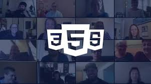

Web Development

Programarea web (web development) este procesul de creare și construire a aplicațiilor web și site-urilor care rulează pe internet și sunt accesate prin intermediul unui browser. Acesta include utilizarea limbajelor de programare, tehnologiilor și framework-urilor pentru a dezvolta funcționalitățile vizibile utilizatorului (frontend) și cele din spatele scenei (backend), precum și mentenanța acestora.
Tehnologii folosite:
- HTML: Limbajul de marcare pentru structura conținutului unei pagini web. .
- CSS: Limbajul de stilizare pentru aspectul vizual al paginilor web.
- JavaScript: Limbajul de programare care adaugă interactivitate și funcționalități dinamice paginilor web.
- Framework-uri: Instrumente și biblioteci care simplifică dezvoltarea, oferind structuri și funcții predefinite pentru a accelera procesul.
license
Certificare: today
12.11.2025
business_center
6 luni
schedule 110 ore
today
12.11.2025
business_center
6 luni
schedule 110 ore
today
12.11.2025
business_center
6 luni
schedule 110 ore